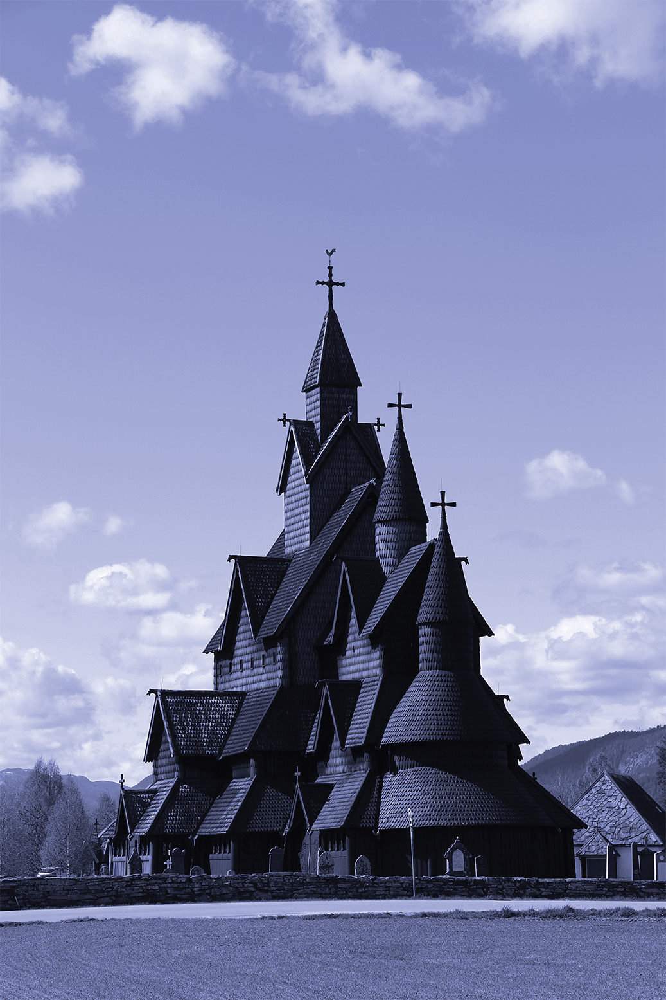
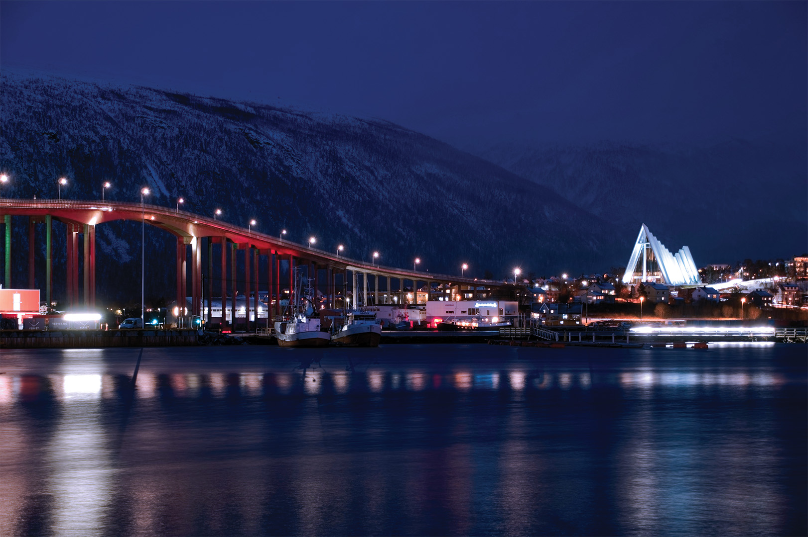

NORUEGA
NORDIK

Noruega
En Noruega, la presencia de la naturaleza define por completo la manera en que se experimenta el territorio. Las ciudades se desarrollan en diálogo constante con montañas, fiordos y costas, creando entornos donde lo urbano no compite con el paisaje, sino que se integra a él. La arquitectura, sobria y funcional, responde a las condiciones del entorno y refuerza una estética donde predominan los materiales naturales y la relación directa con el exterior. Este equilibrio genera espacios que se sienten abiertos, conectados y profundamente vinculados con su contexto.
Más allá de lo visual, Noruega ofrece una experiencia marcada por la escala del paisaje y la intensidad de sus cambios estacionales. La luz juega un papel fundamental, transformando los escenarios a lo largo del año y creando atmósferas que van desde la claridad prolongada del verano hasta los inviernos dominados por tonos fríos y cielos cambiantes. Esta relación con el entorno invita a recorrer el territorio de forma activa, donde cada trayecto se convierte en parte esencial de la experiencia natural.
La cultura noruega también refleja una profunda valoración por la simplicidad, la funcionalidad y el contacto cotidiano con la naturaleza. Los espacios interiores privilegian la luz, la calidez y el uso de materiales como la madera y la piedra, creando ambientes acogedores que contrastan con la inmensidad del paisaje exterior. Esta sensibilidad se extiende al diseño, la arquitectura y la planificación urbana, donde el bienestar y la conexión con el entorno ocupan un lugar central.
Viajar por Noruega es descubrir un país donde la geografía determina el ritmo y la percepción del espacio. Fiordos monumentales, carreteras panorámicas, pequeños pueblos costeros y ciudades contemporáneas conforman un territorio de gran diversidad visual. En cada recorrido, la combinación de naturaleza, cultura y diseño transmite una sensación de amplitud y serenidad que convierte a Noruega en una de las expresiones más impactantes y auténticas del estilo de vida escandinavo.
Oslo

En Oslo, la vida urbana se desarrolla en estrecha relación con el paisaje natural que rodea la ciudad. Fiordos, bosques y colinas forman parte del entorno cotidiano, creando una atmósfera donde la arquitectura contemporánea y los espacios abiertos conviven de manera equilibrada. Esta conexión se percibe en lugares como la Ópera de Oslo, cuya estructura emerge junto al agua y se integra visualmente con el puerto, convirtiéndose en uno de los símbolos más representativos de la ciudad.
La oferta cultural de Oslo combina historia, arte y diseño en espacios que reflejan la identidad moderna del país. El Museo MUNCH reúne obras vinculadas al legado artístico noruego, mientras que el Parque Vigeland transforma el espacio público en una experiencia visual y escultórica única. A esto se suman barrios contemporáneos junto al agua que muestran cómo la ciudad ha renovado antiguas áreas industriales para convertirlas en zonas dinámicas y accesibles al público.
Más allá de sus puntos emblemáticos, Oslo destaca por una forma de vida centrada en el bienestar y el contacto con la naturaleza. Los recorridos peatonales, las ciclovías y las áreas verdes permiten experimentar la ciudad de manera tranquila, incluso dentro de los sectores más activos. Durante el invierno, la nieve transforma completamente el paisaje urbano, mientras que en verano la luz prolongada extiende la vida al aire libre y redefine el ritmo cotidiano. Esta combinación entre modernidad, paisaje y calidad de vida convierte a Oslo en una ciudad donde cada espacio parece diseñado para integrarse con el entorno.
La presencia constante del agua y las montañas genera vistas abiertas y una sensación de amplitud que distingue a la ciudad de otros centros urbanos europeos. Esta relación entre naturaleza y arquitectura define gran parte de la experiencia visual y cultural de Oslo, donde el horizonte permanece siempre conectado con el paisaje circundante y refuerza una percepción de calma y equilibrio.
La arquitectura contemporánea desempeña un papel fundamental en la transformación reciente de la ciudad. Nuevos museos, bibliotecas y espacios públicos han revitalizado el frente marítimo, consolidando un entorno urbano que combina innovación y accesibilidad. El uso de materiales sobrios, superficies limpias y amplias áreas peatonales refleja una visión del diseño en la que la funcionalidad y la integración con el contexto natural son prioritarias. Cada intervención parece pensada para reforzar la relación entre la ciudad y su entorno.
Oslo también destaca por su capacidad para ofrecer experiencias contrastantes dentro de un mismo recorrido. En pocos minutos es posible pasar de un distrito cultural de arquitectura vanguardista a senderos boscosos o miradores con vistas al fiordo. Esta proximidad entre naturaleza y vida urbana genera una dinámica singular, en la que el acceso al paisaje forma parte de la rutina diaria y no de una actividad aislada.
Bergen
En Bergen, la relación entre ciudad y paisaje natural define una de las identidades urbanas más reconocibles de Noruega. Rodeada por montañas y conectada directamente con los fiordos, Bergen combina una atmósfera histórica con escenarios naturales que cambian constantemente según la luz y el clima. El sector de Bryggen, con sus fachadas de madera alineadas frente al puerto, conserva parte esencial de la historia comercial de la ciudad y constituye uno de sus espacios más emblemáticos y fotografiados.
La conexión con el entorno se hace aún más evidente a través de lugares como Monte Fløyen, desde donde es posible observar la ciudad, el puerto y las montañas que la rodean. Esta cercanía con la naturaleza influye directamente en el ritmo cotidiano y en la forma en que Bergen es recorrida y experimentada. Calles estrechas, zonas portuarias y espacios culturales se integran de manera orgánica, creando un ambiente donde lo urbano mantiene siempre una relación visual con el paisaje y lo natural.
Más allá de sus puntos turísticos, Bergen destaca por una atmósfera tranquila y profundamente ligada al mar. La lluvia frecuente, las neblinas y los cambios de luz aportan una dimensión visual característica que transforma continuamente la apariencia de la ciudad. A esto se suma una escena cultural activa, con galerías, mercados y espacios creativos que refuerzan su identidad contemporánea sin perder conexión con la tradición. Esta combinación convierte a Bergen en un destino donde historia, paisaje y vida cotidiana conviven de manera constante y cambiante.
.jpg)
Tromso

En Tromsø, la relación con el paisaje ártico define una experiencia urbana distinta a cualquier otra en el norte de Europa. Rodeada por montañas, fiordos y extensiones nevadas durante gran parte del año, la ciudad combina una atmósfera tranquila con escenarios naturales de gran escala. Uno de sus puntos más reconocibles es la imponente Catedral del Ártico, cuya arquitectura contemporánea se ha convertido en un símbolo visual de la ciudad y refleja la conexión entre diseño moderno y entorno natural.
La luz transforma constantemente la apariencia de Tromsø. Durante el invierno, las noches prolongadas y la posibilidad de observar auroras boreales generan una atmósfera única, mientras que en verano el sol de medianoche modifica completamente el ritmo diario y prolonga la actividad urbana durante horas inusuales. Esta relación con el clima y los ciclos naturales influye directamente en la identidad de la ciudad y en la manera en que sus espacios son habitados y recorridos. Esto genera una relación equilibrada entre la naturaleza y la vida cotidiana.
Más allá de sus paisajes, Tromsø mantiene una escena cultural activa que combina tradición e innovación. Museos, cafés y espacios culturales aportan movimiento a una ciudad que conserva una vida urbana dinámica pese a su ubicación remota. El puerto y las zonas costeras refuerzan además su vínculo histórico con el mar y con las exploraciones del Ártico, elementos que continúan presentes en gran parte de su identidad visual y cultural.
Descargar revista en PDF